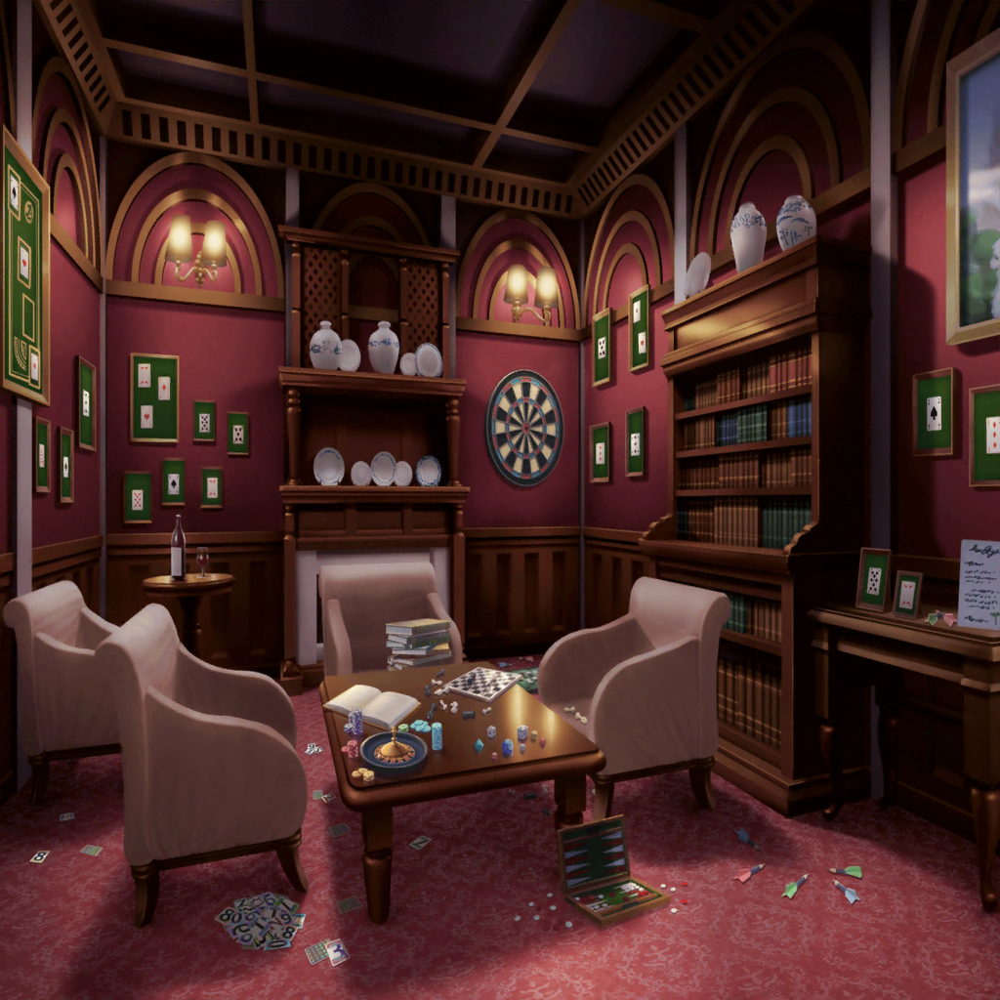

第４の部屋
千聖
ここが次の部屋みたいだけれど……
今までの部屋より広いわね
麻弥
テーブルにいろいろなゲームが置いてありますよ！
チェス、ルーレット……
イヴ
こっちの壁にはダーツがあります！
その奥にはトランプの札が飾ってありますね！
千聖
どうやらこの部屋は、
『遊技場』といったコンセプトの部屋みたいね
イヴ
チサトさん、マヤさん、見てくださいっ！
真ん中のテーブルに、またカードが置いてあります！
千聖
ホントだわ。あれがきっと問題文よね。
行ってみましょう！
イヴ
また、今までと同じデザインのカードですよ！
私、読んでみますね！
イヴ
えっと……
『ジャックはお菓子を独り占め。
ジャックはもらえず泣いています』……と書いてあります
麻弥
ど、どういうことでしょう……？
わかりますか、千聖さん？
千聖
はっきりとはわからないけれど、問題文の中に
『ジャック』が２回出てきているのが気になるわね
麻弥
たしかにそうですね。
一方は独り占め、もう一方はもらえない……
けど、この『ジャック』ってなんのことでしょうか……？
イヴ
ひょっとして……
ジャック・オー・ランタンのことじゃないですか！？
ジャック・オー・ランタンの『ジャック』ですよ！
麻弥
おぉ！ それはジブン、全然気づかなかったです！
千聖
（麻弥ちゃんが、気づかなかった？
こんな簡単なことに気づかないなんて、あるはずないわ……）
イヴ
……あ！ 私、答えがわかったかもしれません！
この部屋のどこかにお菓子を独り占めした
ジャック・オー・ランタンがいて――
イヴ
そのお菓子をもう片方のジャック・オー・ランタンに
わけてあげればいいんじゃないでしょうか？
麻弥
な、なるほど！
たしかにそう考えると問題文の趣旨と一致しますね！
イヴさん、お見事です！
千聖
ちょっといいかしら、麻弥ちゃん？
麻弥
は、はい？
千聖
麻弥ちゃん、さっきから私やイヴちゃんの意見に
賛成するばかりだけど、麻弥ちゃんの意見も聞いてみたいわ
麻弥
じ、ジブンの意見……ですか？
あ、いや、ジブンはこういう問題が苦手なので、
お二人についていくので、精一杯という感じです……っ
千聖
そう？
麻弥ちゃんの無人島での活躍を思い出したら、
こういう問題も得意そうだと思ったのだけど……
麻弥
そ、それは……なんというか……
千聖さんの買いかぶりですってっ！
ジブンは、こういう問題は向いてないみたいですっ！
千聖
ふふ、そう……
麻弥ちゃんも、いろいろ大変ね
麻弥
！？
麻弥
あ、あの！ イヴさんの推理が正しいとしたら、
この部屋のどこかにジャック・オー・ランタンが
あるってことですよね……っ！？
イヴ
はい！ きっとお菓子を独り占めした
ジャック・オー・ランタンとお菓子をもらえなかった
ジャック・オー・ランタンがいるはずです！
麻弥
と、とりあえず、探してみましょう！
１０分後
イヴ
見つかったジャック・オー・ランタンは、
結局これ１つだけみたいですね……
私の推理が間違っていたのでしょうか……？
麻弥
ん……？
こ、このジャック・オー・ランタン、口の部分が開きますよっ！
とりあえず、開けてみましょうっ！ ……えいっ！
イヴ
わ、中にキャンディが入っています！
えっと……全部で５つありますよ！
千聖
これがきっとお菓子を独り占めした、という
ジャック・オー・ランタンね
麻弥
問題文は『ジャックはお菓子を独り占め。
ジャックはもらえず泣いています』……ですから、お菓子を
もらえなかったジャックが、他に四人いるということでしょうか？
イヴ
四人、ですか？ 部屋中くまなく探しましたけど、
他にジャック・オー・ランタンはいなさそうでしたよ
イヴ
チサトさんは、どう思いますか？
千聖
きっとその『４』という数字が重要なんだと思うわ。
麻弥ちゃんが、そう言うからには、ね？
麻弥
……っ！？
ち、千聖さん……
それは……どういう意味、ですか？
千聖
ふふ、特に深い意味はないわ。今までのことを振り返ってみたら
麻弥ちゃんが何気なく言ってくれたことが、
とてもいいヒントになっていたなって思っただけよ
イヴ
たしかに……そう言われるとそうですね！
さっきの部屋で、暗闇が『夜』ということに気づけたのも、
マヤさんのひと言のおかげでした！
麻弥
そ、それはたまたまですって！
千聖
その『たまたま』に何度も助けられたわね、私達
麻弥
千聖さん……もしかして……？
千聖
ふふふっ、なんのことかしら？
さあ、早く四人の『ジャック』を見つけましょう。
この部屋の中にいるのは間違いないんだから……
イヴ
そうですね！ がんばりましょう！
えっと、この部屋の中にあるものといえばチェス、ルーレット……
あとは壁に飾られたダーツとトランプの札……ですね……
イヴ
本当にここに四人の『ジャック』が、いるんでしょうか……？
千聖
四人の『ジャック』……四人……！？
わかった！ それよ、イヴちゃん！
イヴ
え？ ど、どれですか！？
千聖
答えはトランプじゃないかしら？
四人のジャック……
トランプの１１の札の呼び方は『ジャック』でしょ？
イヴ
『ジャック』……たしかに、そう呼びます！
なるほど！ 私にもわかった気がしますっ！
千聖
壁に飾ってあるトランプを見てみましょう。
悪いけど、麻弥ちゃんも手伝ってくれる？
たぶん、これくらいなら手伝っても大丈夫よ
麻弥
ち、千聖さん……
言いたいことがあるなら、はっきり言ってください〜！
千聖
いいえ、何もないわ♪
イヴ
このスペードのジャックで最後です！
千聖
トランプの口のところが開いて、キャンディを入れられるように
なっているなんて……ずいぶんと手間のかかったことをするわね
イヴ
ジャックさん。どうぞ、キャンディを食べてくださいっ！
えい！
千聖
あ……！ ダーツの的が落ちて、中から
金のジャック・オー・ランタンが出てきたわ！
イヴ
これでこの部屋はクリアですね！
やりましたねチサトさん、マヤさん！
麻弥
そ、そうですね……あは、ははは……
イヴ
どうしたんですか、マヤさん？
とても複雑な顔をしてますけど……
もっと喜んでください！
千聖
ふふふ、それじゃあ、次の部屋に向かいましょう。
麻弥ちゃん、案内してくれるかしら？